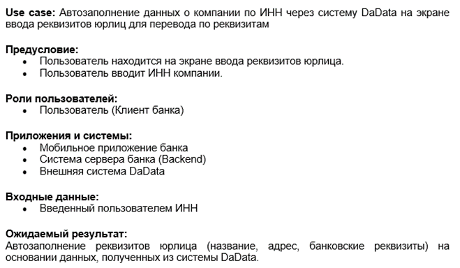
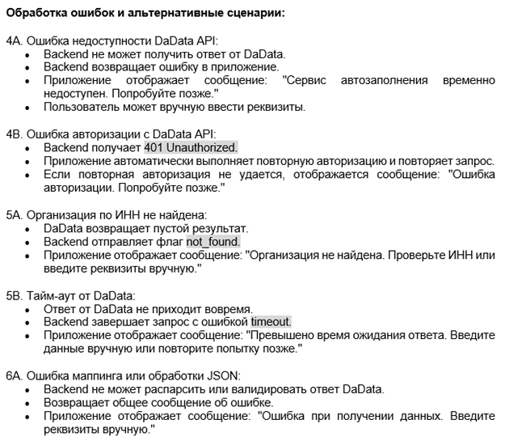

Ниже представлен проект, реализованный в рамках учебной задачи
Автозаполнение реквизитов
Контекст задания: Необходимо реализовать автозаполнение реквизитов компании по ИНН в мобильном приложении банка с использованием сервиса DaData.
Задача: Спроектировать use case, описывающий взаимодействие пользователя с системой, а затем на его основе построить диаграмму последовательности UML, отражающую логику работы функциональности, включая основные и альтернативные сценарии.
Результат: Разработан Use Case и диаграмма последовательности UML, демонстрирующая процесс автозаполнения данных о компании по ИНН, взаимодействие между пользователем, мобильным приложением, сервером банка и API DaData (смотрите ниже).

